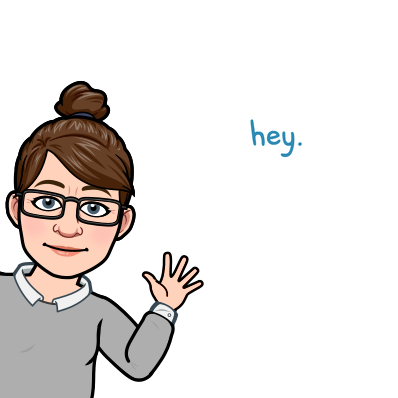

About

Hi, my name is Kathryn, online as KC Reads.
This project started because I wanted storytime planning to feel a little easier—and a lot less time-consuming.
As a children’s librarian, I’ve spent plenty of time digging through notes, bookmarks, and random documents trying to find the right song or rhyme for the moment.
I wanted a simple way to search, find, and use what I needed without overthinking it.
So this is that—a growing collection of songs and rhymes you can search by title or keyword.
I love puppets, picture books, and anything a little silly.